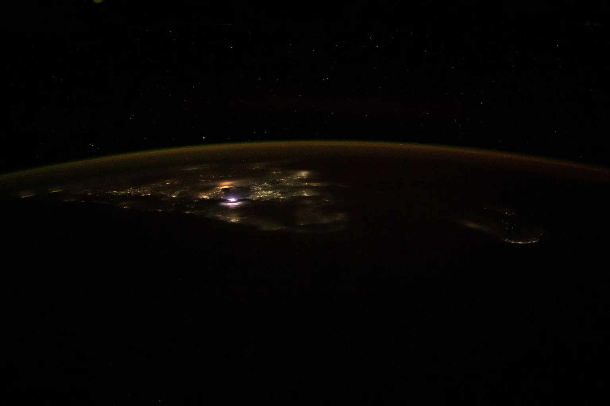

Learning what to ask of more capable AI
Someone wants to take a course while caring for a family member. They ask an AI tool to help plan it. On paper, the fastest course looks like the best choice. In their life, keeping two afternoons free and having enough energy to be present at home matter more. They try a timetable, see what it costs them in practice and revise the request.
That is one way to understand human alignment. People compare what they say matters with what they do and what happens as a result. They can change their minds. An Aura could help them remember the experience, correct its account and decide which lessons to carry into their next choice.
AI alignment is about getting an AI system to act within the purposes and limits people set. A service designed to reduce waiting times could be checked for whether it helps the people who wait longest, and whether they can challenge a decision. People affected by the service may disagree about which trade-offs are fair. They need a way to see whose priorities guided the design and raise an objection when the result is different from what was promised.
Those questions become more important if we develop superintelligence, meaning AI that substantially exceeds human capability across many fields. The human and superintelligence alignment paper proposes ways for people in different communities to reflect on their own terms, test ideas against experience and share what they choose. Agreeing on a safeguard or common project can leave room for different ideas of a good life.
A small group with different skills can use its chosen AI tools to investigate a shared question. The paper calls this a mastermind. It can record why it chose a course of action and revisit it when something changes. An individual’s permission to share a finding is separate from permission to use their private records in model training.
This gives communities a way to contribute experience, disagreements and corrections to how AI tools are designed and tested. It also gives them grounds to ask who has authority to change or stop a system when its behaviour harms the people it is meant to serve.
Building peace through everyday cooperation
Two coastal communities could compare how they keep food fresh and essential services available after a storm. One has experience organising neighbourhood food storage. The other can show how it keeps maps and contacts available when the internet drops out. They choose what to share, try a change and talk again after the next wet season. Over time they learn whom to call and where the other place does things differently for good reason.
Luke’s Fiji–Australia Vuvale Union submission proposes that kind of work across food, health, education, culture and disaster readiness. Vuvale describes family and the responsibilities of that relationship. The paper uses Building Economies: Life, Action, Unity, or B.E.L.A.U., to ask what helps a place flourish, how shared values become useful work and how communities can cooperate while retaining authority over their own decisions.
An indicative A$100 million scenario gives that work a scale. At the A$6 million site allowance, five to ten community computing installations would account for A$30–60 million. The remaining A$40–70 million could support local staff and training, food tools, research, co-operative finance, disaster readiness and evaluation. Participants on both sides would shape the priorities, ownership and terms for sharing information.
The Ocean of Peace Alliance submission draws on talanoa, dialogue grounded in relationship and attentive listening, alongside consensus, peaceful settlement and respect for sovereignty. It proposes making treaty texts, work plans, decisions and progress easier to find, translate and follow. An annual account of the civic peace dividend could ask what skills and services people gained, whether local languages received better support and what relationships people could call on in a crisis. The P4A Oceania project offers another way into this regional work.
The plan starts from a view about what makes war easier to sell. When people are stretched by rising costs and long hours, and the information they need is withheld or distorted, it is harder to question decisions made in their name. The same capacity that helps someone challenge a bill or correct a local record can help communities challenge a story about people across a border. If those communities already work together, they have someone to call, evidence they can compare and ways to act together before fear narrows the choices.

Working together across the world
A group in Minjerribah learns how to keep important local information available through a communications outage. Another group wants to try the method. They can work in their own language, decide who has authority over the information and offer back what they learn. Both places can keep the arrangements that suit them and understand why each works where it does.
That is the idea behind GAJRA Earth, the proposed Global Association for Joyful Responsible Abundance on Earth. A gajra is a flower garland. The thread connects the flowers and each keeps its own form. In Luke’s independent contribution for the 81st United Nations General Assembly, the flowers are locally rooted associations shaped under their own laws and by the people involved. They would connect through work and questions they choose to share. The GAJRA Earth Claude build includes a public watch following global AI alignment debates, law and computing infrastructure decisions. Dated entries link to their sources, and an upcoming-events page shows opportunities to take part.
The contribution proposes seven steps for associations to repeat.
- Define joy, responsibility and abundance in local terms. Ask what the words mean across generations.
- Reflect on how daily experience and behaviour fit those values. People choose what they record and share.
- Imagine several futures worth living in. Use stories, films, games or models to see the choices.
- Build something people can use in food, care, learning, energy, creative work or civic life.
- Measure what changed, who benefited, who carried the cost and what still needs work.
- Share the learning in a form others can use, with permission from the people responsible for it.
- Align decisions, institutions and AI tools with what people learnt. Return to an earlier step when experience calls for it.
The proposed July 2035 global festival would mark Live Aid’s 50th anniversary. It would run for three continuous days, bringing together music, art, public participation and conversations about shared values. Day one, Past, would explore inheritance, remembrance and healing. Day two, Present, would examine people’s lives and what they are already trying. Day three, Future, would ask which worlds are worth creating and what to begin together. A proposed world vote would invite responses to shared questions, informed by accessible information and different views. The festival would celebrate and examine years of local work, with the learning continuing afterwards.
The festival and world-vote proposals are described in the human and SI alignment paper, page 25, and the UNGA81 contribution, page 7.
How music carries the ideas
A person can encounter the plan through an account of community ownership or through a song about remembering someone they love. Those encounters do different work. A plan can explain a procedure. A song can help a listener recognise why they would care enough to try it.
The i C. infinity music project gathers the songs and performance versions of A Protopian Gambit. The album now has 22 songs, including both performances of We Go Beyond. The songs give a voice to experiences that are easy to flatten into technical terms. Primordial Consent 1,2,3, Infinity imagines the birth of the divine-self digital twin. Kintsugi Protocol treats the marks left by damage as part of the story of repair. 60 Days Set in Stone takes up the proposed Geode journey in artistic form.
Hold the Light brings memory and care down to the level of a relationship. Adaptable Yes asks what consent feels like when someone has time to consider it and can change their mind. Every Border a Bridge imagines travel as a way to listen and form a connection. Shifting Sands of Timeless Redlands carries the questions back to Country, living place names and the consequences of decisions made close to home.
Don’t Throw a Brick, subtitled Fill a Form, expresses the frustration that can come before civic action. The workbenches give that feeling a route into checking a source, finding the responsible body and asking for something specific. We Go Beyond takes a more expansive path from personal reflection through Minjerribah to the prospect of caring for life beyond Earth. The song Joyful Responsible Abundance gives truthfulness and learning across cultures a shared chorus.
Music, film, games and travel give people ways to imagine the kind of world they would choose to inhabit. The artistic work can hold uncertainty and spiritual imagery in its own terms. The related design and research papers give readers a place to examine what is proposed, what can be tested and what would need evidence before people rely on it.
What would show that the plan is working?
A whole system can be described in a document. Its value becomes clear when people use particular pieces and can show what changed. Someone should be able to follow where an idea came from, what stage it has reached and what evidence would make the next step sensible.
Several tools already offer something a person can try. Aura Matrix Studio lets people organise and export chosen reflections. Household Bill Check can prepare a comparison or research brief. The Legal Engine can quote dated legal text from the documents it indexes. P4A has a civic workbench. These offer distinct uses now and can reveal where a handoff or explanation needs to improve.
The larger proposals have different tests. A supported Verse Box session could show whether a visitor completes a useful task and can take their work home. An installation could show that essential notices remain available in an outage exercise and that a local team can keep the equipment running. A co-operative acquisition would need an asset it can afford to maintain and renew. A shared scientific model needs another group to be able to run it, inspect the inputs and publish a correction. A health study needs its own design, consent and oversight.
The work has horizons of different lengths. Brisbane 2032 gives local projects a reason to coordinate training, access and creative work, and to ask what skills and relationships will continue after the Games. The proposed global festival in July 2035 would mark Live Aid’s 50th anniversary with three continuous days of music, art and participation around Past, Present and Future. Communities would share what they had tried and learnt, explore shared questions through the proposed world vote and consider what to begin together. The longer papers carry the questions into future habitats, scientific discovery and peaceful work beyond Earth. They ask what people want to preserve as their means to act grow larger.
This is a preview of the work assembled so far. Its scale comes from combining many places and purposes. People can learn to direct their own tools. Communities can own facilities that let them test and act on what they know. Partners across borders can challenge a false claim and still have a relationship worth returning to. A next move earns its place by improving something people care about and leaving them better equipped to decide what follows.